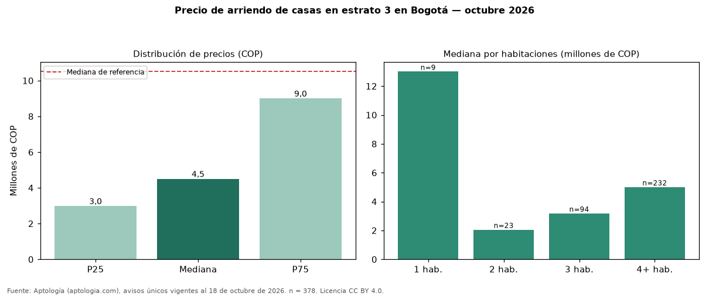

Precio de arriendo de casas en estrato 3 en Bogotá — octubre 2026
Con 378 avisos únicos, el canon mediano de casas en estrato 3 en arriendo en Bogotá es COP 4.500.000 al mes. Frente a casas en Bogotá (COP 10.500.000), la diferencia es de 57 % por debajo. El rango intercuartílico va de COP 2.980.000 a COP 9.000.000 (razón 3,0). Por metro cuadrado, la mediana es COP 24.483/m² (−20 % frente a COP 30.556/m²). Cruzando con la oferta de venta equivalente, la rentabilidad bruta implícita es 8,1 % anual. Por habitaciones: 1 habitación, COP 13 millones (n = 9); 2 habitaciones, COP 2.050.000 (n = 23); 3 habitaciones, COP 3.175.000 (n = 94); 4 o más habitaciones, COP 5.000.000 (n = 232). El área mediana es 200 m² (referencia: 345 m²). Datos abiertos CC BY 4.0 de Aptología; fuente y búsqueda de inmuebles: https://www.aptologia.com/arriendo-estrato/bogota/estrato-3. Archivos: PDF de 2 páginas, CSV con las cifras y gráfica PNG.

| Avisos únicos | 378 |
|---|---|
| Percentil 25 | COP 2.980.000 |
| Mediana | COP 4.500.000 |
| Percentil 75 | COP 9.000.000 |
| Mediana por m² | COP 24.482 |
Fuente: avisos vigentes de portales inmobiliarios recopilados por Aptología, deduplicados (mínimo 30 avisos únicos por celda). Precios pedidos, no cerrados. Fecha: 2026-10-18.